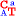

(links). .
. .
.Die Titelleiste erstreckt sich über den oberen Rand eines Fensters. Sie enthält den Programmnamen CrypTool und den Namen des aktiven Dokuments.
Zum Verschieben des Fensters kann die Titelleiste gezogen werden. Auch Dialoge lassen sich durch Ziehen ihrer Titelleiste verschieben.
Zusätzlich kann eine Titelleiste folgende Elemente enthalten:

(links)...